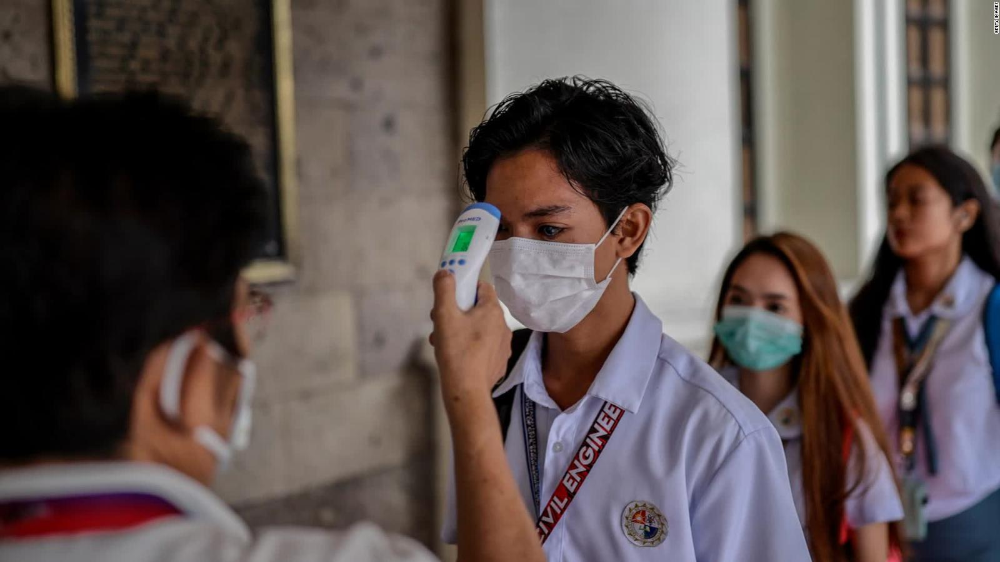

The COVID-19 virus affects different people in different ways. COVID-19 is a respiratory disease and most infected people develop mild to moderate symptoms and recover without the need for special treatment.
People who have underlying medical conditions and people over the age of 60 are at increased risk of developing serious illness and death.
Common symptoms include:
People with mild symptoms who are healthy should isolate themselves and contact their physician or a COVID-19 hotline for guidance on testing and referral.
People with a fever, cough, or difficulty breathing should call their doctor and seek medical attention.
Coronavirus disease (COVID-19) is an infectious disease caused by a newly discovered coronavirus.
Most people infected with the virus will experience mild to moderate respiratory illness and will recover without the need for special treatment. Elderly people and those with medical conditions such as cardiovascular disease, diabetes, chronic respiratory disease and cancer are more likely to develop serious illnesses.
The best way to prevent and slow down transmission is to be well informed about the COVID-19 virus, the disease it causes and how it spreads. Protect yourself and others from infections by washing your hands or using an alcohol-based mop often and without touching your face.
The COVID-19 virus is mainly spread by droplets of saliva or nasal secretions when an infected person coughs or sneezes, so it is important that you practice breathing etiquette (coughing into the bent elbow).
At the moment, there are no specific vaccines or treatments for COVID-19. But, there are many clinical trials going on evaluating possible treatments.
To prevent infection and delay transmission of COVID-19, do the following:
Currently, no antiviral drugs are recommended for treatment with COVID-19. Treatment is aimed at relieving symptoms and may include: